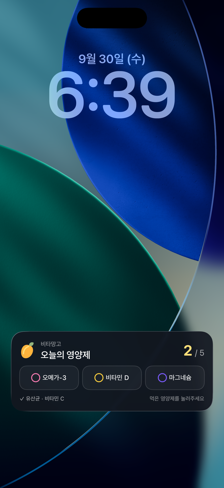
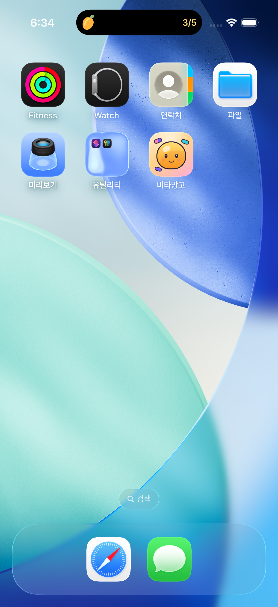
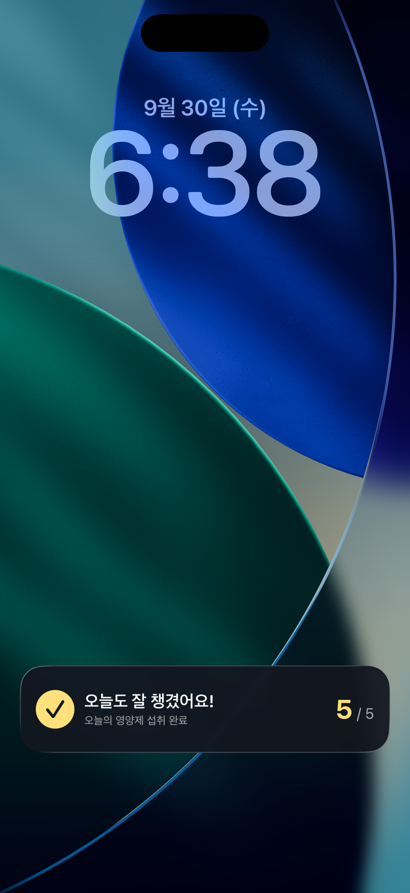

VITA MANGO / LIVE ACTIVITY
시안에서 실제 iOS 화면으로.
앱 종료 상태에서 섭취 기록 → 앱 재실행 후 반영까지 확인했어요.
구현 화면 · iPhone 17 Pro 시뮬레이터
01
잠금화면
영양제별로 바로 체크

02
다이내믹 아일랜드
다른 화면에서도 섭취 현황 표시

03
전체 완료
완료 메시지와 기록 저장

홈 → 잠금화면 섭취 체크 → 시작
테스트용 예시 데이터 · TestFlight / 스토어 배포 전